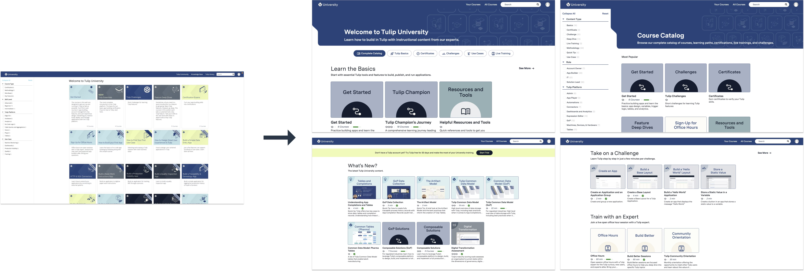

Challenge: Tulip University's original experience was essentially one large, undifferentiated collection of courses. Learning content had little meaningful organization or sequencing, and basic catalog filters made it difficult for customers to find material relevant to their role, goals, or level of experience. The experience presented a library of assets rather than helping users decide where to start and what to learn next.
Design rationale: I separated two different user needs that the original homepage had conflated: guided discovery and catalog search. New learners needed help deciding where to start and what to learn next; returning learners needed to locate a specific course or resource efficiently. A single undifferentiated grid did neither well.
Homepage as a learning experience: I redesigned the homepage around clear pathways by content type and learning goal: Tulip Basics, Certificates, Challenges, Use Cases, and Live Training. A dedicated Learn the Basics section orients newcomers, while What's New? surfaces timely learning content. Hands-on challenges and expert-led training make it easier to move from browsing resources to practicing product skills.
Catalog as a discovery tool: I gave the complete course catalog its own browsing experience, with clearer content groupings and improved filters for content type, role, and Tulip platform topics. Instead of making every visitor scan the same wall of courses, the new design supports both exploratory learning and targeted lookup.
Before and after: The comparison below shows the original course-heavy homepage on the left and the redesigned homepage, catalog, and learning sections on the right. The central change is not just visual: users can now choose a guided path or search the full library according to their needs.
Design and implementation: I collaborated with our design team on Figma mockups, then implemented the redesigned experience directly in Skilljar using HTML, CSS, and JavaScript. I also developed nearly all of the courses, exams, and learning content available on the platform, allowing me to connect the site structure with the underlying curriculum.
Outcome: The redesign transformed Tulip University from a largely unstructured course repository into a more intentional customer education experience, with persona-based entry points, clearer content organization, and a more usable catalog. Its goal was to help customers find appropriate learning faster and support onboarding and continued product adoption.

Courses are publicly accessible with free registration. I can also walk through the learning experience and design decisions in more detail.